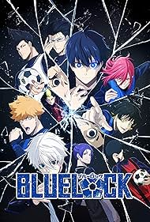

BLUE
LOCK
WORLD CHALLENGE
Inicio
Capítulos
La obra
Acerca de
Redes
Donación
☀
PT
EN
ES
Blue Lock: World Challenge
Capítulo 01
Título del Capítulo
← Capítulos
01 / 02
Siguiente →

← Volver a los capítulos
Fin del capítulo
Siguiente →
Comentarios
Comenta como invitado o inicia sesión con tu cuenta.
Activa JavaScript para ver y escribir comentarios.

Comentarios
Comenta como invitado o inicia sesión con tu cuenta.